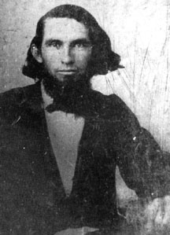

|

NAME: Adolphus Williamson Mangum
BORN: 1834
DIED: 1890
ALLEGIANCE: Confederate
HIGHEST RANK: Chaplain
UNIT: 6th North Carolina Infantry
|
|
The bodies of more than 11,000 Union prisoners of war were
buried in massive trenches at Salisbury Prison in North
Carolina. About two-thirds of them remain anonymous. The
others are identified only because the Rev. Adolphus
Williamson Mangum, a prison chaplain for most of the war,
conscientiously documented their interments when he was in
charge of burial duty.
Adolphus Williamson Mangum and several of his cousins enlisted in the
6th North Carolina Infantry in 1861. A 27-year-old Methodist
minister with a Doctor of Divinity degree, he was appointed
regimental chaplain. The regiment's first battle was the
First Battle of Manassas, Virginia, on July 21, 1861. One of
his cousins, Lieutenant William Preston Mangum, the only son
of 1836 presidential candidate Willie P. Mangum, was
mortally wounded. Adolphus attended him at the military
hospital in Louisa Court House, Virginia. They recited Bible
passages together before William died on July 30.
On October 31 Adolphus left the army due to illness and
returned home to Salisbury, North Carolina. There he served
as chaplain of the Confederacy's Salisbury Prison and spent
most of his time tending to sick and wounded Union prisoners
of war. The rest of his time he spent keeping records and
diaries. A history of the prison based on those writings was
later published. It constitutes much of what is known about
the prison.
After the war Adolphus helped reopen the University of North
Carolina, which had been closed because of the hostilities.
He was one of 12 faculty members and taught law, science,
literature and religion. On May 12, 1890, he died in Chapel
Hill. The Mangum dormitory on the university campus was
later named after him and two relatives.
Source: Civil War Times Illustrated
32:5 (November/December 1993), 80.
|